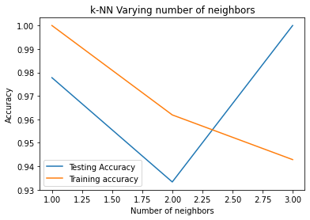

Konsep/Algoritma K-NN (Tugas 3)
Konsep/Algoritma K-NN (Tugas 3)#
**Building a k-Nearest-Neighbors (k-NN) Model with Scikit-learn **
import pandas as pd
#read in the data using pandas
dataset_url = "https://gist.githubusercontent.com/netj/8836201/raw/6f9306ad21398ea43cba4f7d537619d0e07d5ae3/iris.csv"
#check data has been read in properly
df = pd.read_csv(dataset_url)
df.head()
| sepal.length | sepal.width | petal.length | petal.width | variety | |
|---|---|---|---|---|---|
| 0 | 5.1 | 3.5 | 1.4 | 0.2 | Setosa |
| 1 | 4.9 | 3.0 | 1.4 | 0.2 | Setosa |
| 2 | 4.7 | 3.2 | 1.3 | 0.2 | Setosa |
| 3 | 4.6 | 3.1 | 1.5 | 0.2 | Setosa |
| 4 | 5.0 | 3.6 | 1.4 | 0.2 | Setosa |
# We can get a quick idea of how many instances (rows) and how many attributes (columns) the data contains with the shape property.
df.shape
(150, 5)
df.describe()
| sepal.length | sepal.width | petal.length | petal.width | |
|---|---|---|---|---|
| count | 150.000000 | 150.000000 | 150.000000 | 150.000000 |
| mean | 5.843333 | 3.057333 | 3.758000 | 1.199333 |
| std | 0.828066 | 0.435866 | 1.765298 | 0.762238 |
| min | 4.300000 | 2.000000 | 1.000000 | 0.100000 |
| 25% | 5.100000 | 2.800000 | 1.600000 | 0.300000 |
| 50% | 5.800000 | 3.000000 | 4.350000 | 1.300000 |
| 75% | 6.400000 | 3.300000 | 5.100000 | 1.800000 |
| max | 7.900000 | 4.400000 | 6.900000 | 2.500000 |
# Let’s now take a look at the number of instances (rows) that belong to each class. We can view this as an absolute count.
df.groupby('variety').size()
variety
Setosa 50
Versicolor 50
Virginica 50
dtype: int64
from sklearn.preprocessing import LabelEncoder
df['variety'] = LabelEncoder().fit_transform(df['variety'])
df
| sepal.length | sepal.width | petal.length | petal.width | variety | |
|---|---|---|---|---|---|
| 0 | 5.1 | 3.5 | 1.4 | 0.2 | 0 |
| 1 | 4.9 | 3.0 | 1.4 | 0.2 | 0 |
| 2 | 4.7 | 3.2 | 1.3 | 0.2 | 0 |
| 3 | 4.6 | 3.1 | 1.5 | 0.2 | 0 |
| 4 | 5.0 | 3.6 | 1.4 | 0.2 | 0 |
| ... | ... | ... | ... | ... | ... |
| 145 | 6.7 | 3.0 | 5.2 | 2.3 | 2 |
| 146 | 6.3 | 2.5 | 5.0 | 1.9 | 2 |
| 147 | 6.5 | 3.0 | 5.2 | 2.0 | 2 |
| 148 | 6.2 | 3.4 | 5.4 | 2.3 | 2 |
| 149 | 5.9 | 3.0 | 5.1 | 1.8 | 2 |
150 rows × 5 columns
#Let's create numpy arrays for features and target
X = df.drop('variety',axis=1).values
y = df['variety'].values
import matplotlib.pyplot as plt
import seaborn as sns
%matplotlib inline
plt.figure()
sns.pairplot(df, hue = "variety", size=3, markers=["o", "s", "D"])
plt.show()
/usr/local/lib/python3.8/dist-packages/seaborn/axisgrid.py:2076: UserWarning: The `size` parameter has been renamed to `height`; please update your code.
warnings.warn(msg, UserWarning)
<Figure size 432x288 with 0 Axes>
from mpl_toolkits.mplot3d import Axes3D
fig = plt.figure(1, figsize=(20, 15))
ax = Axes3D(fig, elev=48, azim=134)
ax.scatter(X[:, 0], X[:, 1], X[:, 2], c=y,
cmap=plt.cm.Set1, edgecolor='k', s = X[:, 3]*50)
for name, label in [('Virginica', 0), ('Setosa', 1), ('Versicolour', 2)]:
ax.text3D(X[y == label, 0].mean(),
X[y == label, 1].mean(),
X[y == label, 2].mean(), name,
horizontalalignment='center',
bbox=dict(alpha=.5, edgecolor='w', facecolor='w'),size=25)
ax.set_title("3D visualization", fontsize=40)
ax.set_xlabel("Sepal Length [cm]", fontsize=25)
ax.w_xaxis.set_ticklabels([])
ax.set_ylabel("Sepal Width [cm]", fontsize=25)
ax.w_yaxis.set_ticklabels([])
ax.set_zlabel("Petal Length [cm]", fontsize=25)
ax.w_zaxis.set_ticklabels([])
plt.show()
from sklearn.model_selection import train_test_split
X_train, X_test, y_train, y_test = train_test_split(X, y, test_size = 0.3, random_state = 0, stratify=y)
# Fitting clasifier to the Training set
# Loading libraries
from sklearn.neighbors import KNeighborsClassifier
from sklearn.metrics import confusion_matrix, accuracy_score
from sklearn.model_selection import cross_val_score
# Instantiate learning model (k = 2)
classifier = KNeighborsClassifier(n_neighbors=2)
# Fitting the model
classifier.fit(X_train, y_train)
# Predicting the Test set results
y_pred = classifier.predict(X_test)
cm = confusion_matrix(y_test, y_pred)
cm
array([[15, 0, 0],
[ 0, 15, 0],
[ 0, 3, 12]])
pd.crosstab(y_test, y_pred, rownames=['True'], colnames=['Predicted'], margins=True)
| Predicted | 0 | 1 | 2 | All |
|---|---|---|---|---|
| True | ||||
| 0 | 15 | 0 | 0 | 15 |
| 1 | 0 | 15 | 0 | 15 |
| 2 | 0 | 3 | 12 | 15 |
| All | 15 | 18 | 12 | 45 |
#import classification_report
from sklearn.metrics import classification_report
print(classification_report(y_test,y_pred))
precision recall f1-score support
0 1.00 1.00 1.00 15
1 0.83 1.00 0.91 15
2 1.00 0.80 0.89 15
accuracy 0.93 45
macro avg 0.94 0.93 0.93 45
weighted avg 0.94 0.93 0.93 45
accuracy = accuracy_score(y_test, y_pred)*100
print('Accuracy of our model is equal ' + str(round(accuracy, 2)) + ' %.')
Accuracy of our model is equal 93.33 %.
#import KNeighborsClassifier
from sklearn.neighbors import KNeighborsClassifier
import numpy as np
#Setup arrays to store training and test accuracies
neighbors = np.arange(1,4)
train_accuracy =np.empty(len(neighbors))
test_accuracy = np.empty(len(neighbors))
for i,k in enumerate(neighbors):
#Setup a knn classifier with k neighbors
knn = KNeighborsClassifier(n_neighbors=k)
#Fit the model
knn.fit(X_train, y_train)
#Compute accuracy on the training set
train_accuracy[i] = knn.score(X_train, y_train)
#Compute accuracy on the test set
test_accuracy[i] = knn.score(X_test, y_test)
#Generate plot
import matplotlib.pyplot as plt
plt.title('k-NN Varying number of neighbors')
plt.plot(neighbors, test_accuracy, label='Testing Accuracy')
plt.plot(neighbors, train_accuracy, label='Training accuracy')
plt.legend()
plt.xlabel('Number of neighbors')
plt.ylabel('Accuracy')
plt.show()

from sklearn.model_selection import GridSearchCV
#create new a knn model
knn = KNeighborsClassifier()
#create a dictionary of all values we want to test for n_neighbors
param_grid = {'n_neighbors': np.arange(1, 4)}
#use gridsearch to test all values for n_neighbors
knn_gscv = GridSearchCV(knn, param_grid, cv=5)
#fit model to data
knn_gscv.fit(X, y)
GridSearchCV(cv=5, estimator=KNeighborsClassifier(),
param_grid={'n_neighbors': array([1, 2, 3])})
knn_gscv.best_params_
{'n_neighbors': 3}
#check mean score for the top performing value of n_neighbors
knn_gscv.best_score_
0.9666666666666668
# Instantiate learning model (k = 3)
knn = KNeighborsClassifier(n_neighbors=3)
# Fitting the model
knn.fit(X_train, y_train)
# Predicting the Test set results
y_pred = knn.predict(X_test)
cm = confusion_matrix(y_test, y_pred)
cm
array([[15, 0, 0],
[ 0, 15, 0],
[ 0, 0, 15]])
pd.crosstab(y_test, y_pred, rownames=['True'], colnames=['Predicted'], margins=True)
| Predicted | 0 | 1 | 2 | All |
|---|---|---|---|---|
| True | ||||
| 0 | 15 | 0 | 0 | 15 |
| 1 | 0 | 15 | 0 | 15 |
| 2 | 0 | 0 | 15 | 15 |
| All | 15 | 15 | 15 | 45 |
#import classification_report
from sklearn.metrics import classification_report
print(classification_report(y_test,y_pred))
precision recall f1-score support
0 1.00 1.00 1.00 15
1 1.00 1.00 1.00 15
2 1.00 1.00 1.00 15
accuracy 1.00 45
macro avg 1.00 1.00 1.00 45
weighted avg 1.00 1.00 1.00 45
accuracy = accuracy_score(y_test, y_pred)*100
print('Accuracy of our model is equal ' + str(round(accuracy, 2)) + ' %.')
Accuracy of our model is equal 100.0 %.